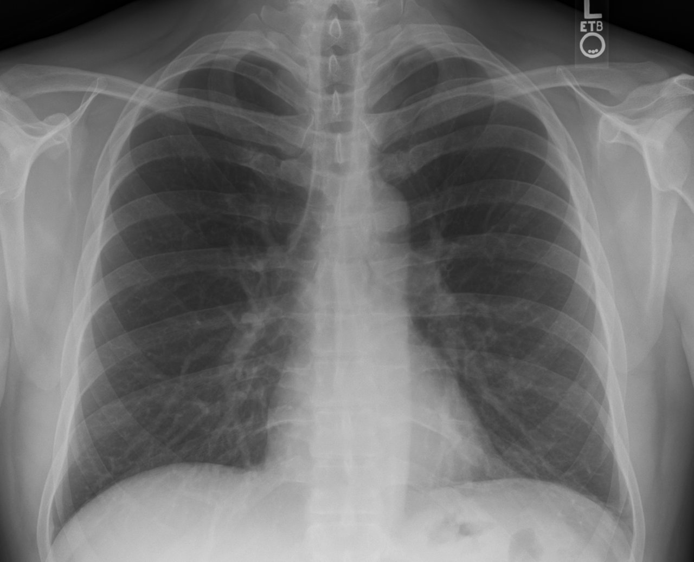

Ficha del catálogo
Radiografía de tórax normal (posteroanterior)
- Sistema
- Respiratorio
- Modalidad
- RX
- Región
- Tórax
- Dificultad
- Básico
El estudio radiológico más solicitado del mundo y la base de toda la radiología. Dominar el tórax normal es imprescindible, porque solo se puede reconocer lo patológico cuando se tiene muy claro cómo se ve lo normal.
Técnica
Paciente de pie, con el pecho contra el receptor y el haz entrando por la espalda (posteroanterior), en inspiración profunda y con una distancia foco-receptor de 1.80 m para minimizar la magnificación del corazón.
Qué observar
- Calidad técnica: Clavículas simétricas respecto a las apófisis espinosas (sin rotación), 9-10 arcos costales posteriores visibles (inspiración adecuada) y vértebras dorsales apenas visibles tras el corazón (penetración correcta)
- Campos pulmonares: Comparar simétricamente ambos lados buscando opacidades o zonas hiperlúcidas
- Hilios pulmonares: El izquierdo se sitúa algo más alto que el derecho
- Silueta cardiaca: El índice cardiotorácico debe ser menor de 0.5 en esta proyección
- Ángulos costofrénicos agudos y libres (si están borrados, sospechar derrame pleural)
- Hemidiafragmas curvos, con el derecho ligeramente más alto por el hígado
- Estructuras óseas, partes blandas y ausencia de aire libre subdiafragmático
Hallazgos
Radiografía posteroanterior con campos pulmonares limpios, silueta cardiaca de tamaño normal, hilios de aspecto habitual y senos costofrénicos libres.
Perlas
Conviene tener una rutina fija de lectura y respetarla siempre, por ejemplo de fuera hacia dentro: Partes blandas, huesos, diafragmas, pleura, pulmones, hilios, mediastino y corazón. Los hallazgos que se escapan suelen estar en las zonas que se miran al final o nunca, como los vértices y detrás del corazón.
Diagnóstico diferencial
- Consolidación neumónica
- Aparece una opacidad de bordes mal definidos con broncograma aéreo que borra el contorno de la estructura con la que contacta, sin pérdida de volumen.
- Derrame pleural
- Se borra el ángulo costofrénico y aparece una opacidad de base pleural con borde superior cóncavo, sin broncograma.
- Atelectasia
- Hay pérdida de volumen con desplazamiento de cisuras, elevación del hemidiafragma y desviación del mediastino hacia el lado afectado.
- Cardiomegalia y congestión
- El índice cardiotorácico supera 0.5 en una proyección posteroanterior técnicamente correcta, con redistribución vascular hacia los vértices y líneas septales.
- Neumotórax
- Se ve una línea pleural fina con ausencia total de trama vascular por fuera de ella, sobre un fondo negro homogéneo.
- Masa o nódulo pulmonar
- Es una opacidad redondeada de bordes definidos rodeada de pulmón aireado, que debe confirmarse en dos proyecciones para descartar superposición.
Simuladores
- La proyección anteroposterior y la portátil magnifican la silueta cardiaca y ensanchan el mediastino, por lo que no permiten aplicar el índice cardiotorácico habitual.
- Una inspiración insuficiente amontona la trama y borra los senos, simulando congestión o consolidación en las bases.
- El pliegue cutáneo se proyecta como una línea que se extiende más allá de la pared torácica, a diferencia de la línea pleural del neumotórax, que se detiene en ella.
- La sombra de la mama, del pezón, del pelo largo o de electrodos y cables puede simular nódulos u opacidades (el pezón se confirma repitiendo con marcador).
Por modalidad
- RX
- Estudio inicial universal por su rapidez, bajo costo y baja dosis; permite comparación seriada y detecta la mayoría de los procesos relevantes.
- TC
- Aporta una resolución muy superior para parénquima, mediastino, pleura y vasos, y es la referencia para caracterizar cualquier hallazgo dudoso.
- US
- Excelente a pie de cama para derrame, consolidación subpleural, neumotórax y para guiar toracocentesis, sin radiación.
- RM
- Papel limitado en pulmón, pero útil en tumores de la pared torácica, del vértice y del mediastino y en la valoración de estructuras vasculares sin radiación.
Protocolo
El paciente se coloca de pie, con la cara anterior del tórax contra el receptor y el haz entrando por la espalda, hombros rotados hacia delante y dorso de las manos en las caderas para desplazar las escápulas fuera de los campos pulmonares. La exposición se realiza en inspiración profunda mantenida, con una distancia foco-receptor de aproximadamente 1.80 metros para minimizar la magnificación cardiaca, alta energía y tiempo corto para reducir el borrado por movimiento. Se complementa con una proyección lateral izquierda con los brazos elevados. Cuando el paciente no puede incorporarse se realiza en decúbito o semisentado, y el informe debe indicarlo.
Clasificación
No existe una única escala para el tórax normal, pero sí criterios de calidad técnica que deben verificarse siempre: Ausencia de rotación comprobada por la simetría de las clavículas respecto a las apófisis espinosas, inspiración adecuada con nueve o diez arcos costales posteriores visibles, penetración correcta con los cuerpos vertebrales dorsales apenas insinuados tras la silueta cardiaca y ausencia de artefactos. Sobre esa base se aplican después mediciones estandarizadas como el índice cardiotorácico, que en la proyección posteroanterior debe ser inferior a 0.5. En seguimiento de enfermedades difusas se emplean escalas semicuantitativas de extensión por zonas.
Errores frecuentes
- Informar sin comprobar antes la calidad técnica, ya que la rotación, la hipoinspiración o la penetración inadecuada crean hallazgos falsos.
- No revisar las zonas ciegas: Vértices, región retrocardiaca, senos costofrénicos posteriores, región subdiafragmática y partes blandas del cuello y de los hombros.
- Detenerse tras encontrar la primera anomalía y no completar la lectura sistemática del resto de la imagen.
- Comparar una radiografía portátil en decúbito con una posteroanterior en bipedestación y concluir que ha aparecido cardiomegalia o derrame.

torax normal PA pulmon anatomia tecnica indice cardiotoracico